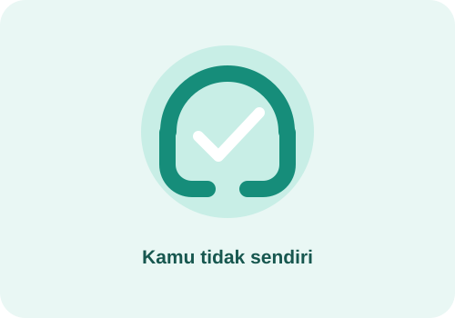

Orang yang mengalami masalah terkait narkoba dapat membutuhkan bantuan tenaga kesehatan dan layanan rehabilitasi. Dukungan yang baik adalah mendengarkan, tidak merendahkan, dan membantu mencari pertolongan yang tepat.
Tempat mencari bantuan
- BNN: informasi pencegahan dan layanan terkait narkoba.
- Puskesmas atau rumah sakit: konsultasi dan penanganan kesehatan.
- Guru BK atau orang dewasa tepercaya: dukungan untuk pelajar.
Informasi resmi: Badan Narkotika Nasional dan Kementerian Kesehatan .
Jika seseorang berada dalam keadaan darurat kesehatan,
segera hubungi layanan darurat setempat atau pergi ke
fasilitas kesehatan.